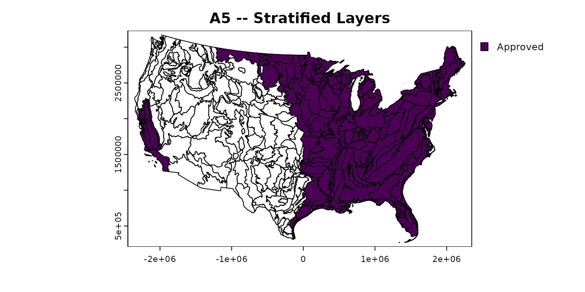
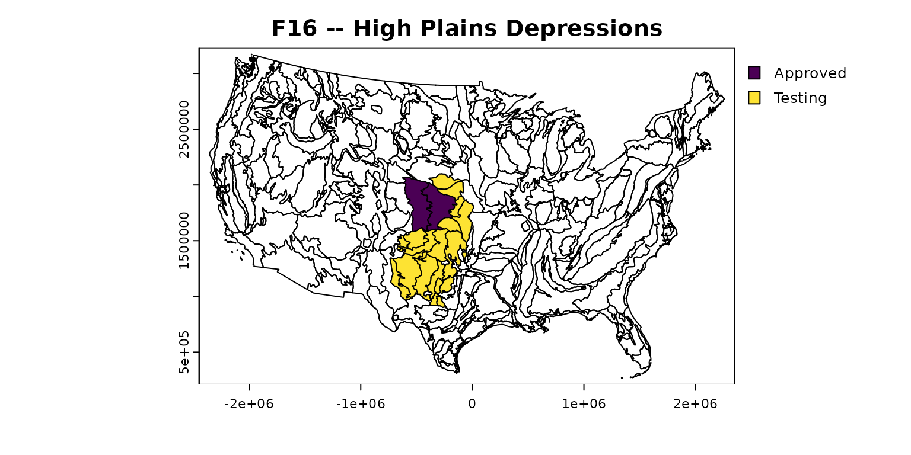
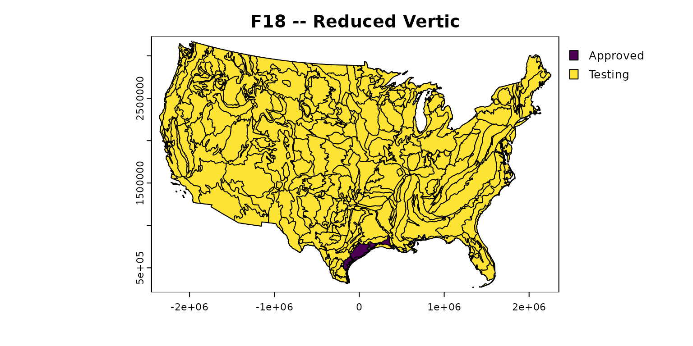
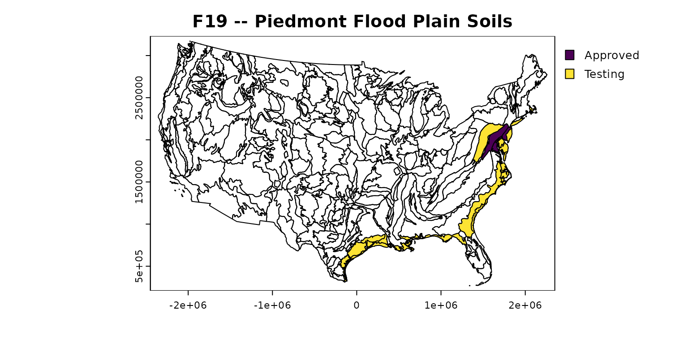
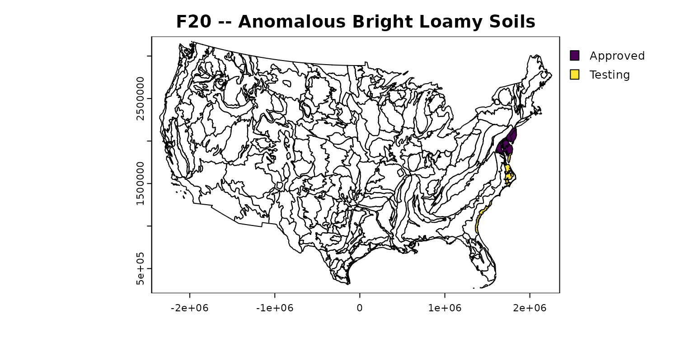
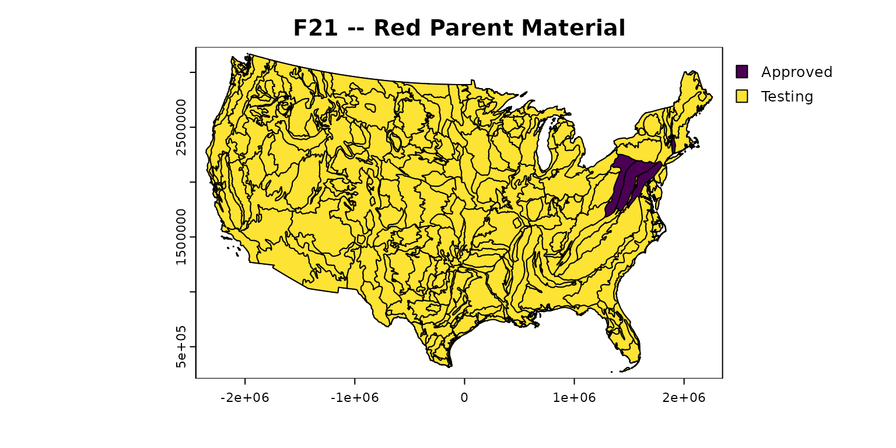

#> hydricsoils v0.1.0.9002 -- using:
#> - 'Field Indicators of Hydric Soils in the United States' v8.2 (2018)
#> - 'Land Resource Regions and Major Land Resource Areas of the United States, the Caribbean, and the Pacific Basin' v5.2 (2022)This vignette shows the usage, criteria, and notes related to the application of Field Indicators of Hydric Soils in the United States.
Usage (“Used in:” section) and testing (“Test in:” section) of hydric indicators are generally based on Land Resource Region (denoted by a code with a single letter, or a single letter followed by a single digit). In some cases indicators are used only in specific MLRAs (denoted by a code starting with one or more digits, possibly ending with a single letter) of a region. In other cases, an indicator is used in all parts of a Land Resource Region except for specific MLRAs (“Except MLRA:” section)
Extent maps for indicators that are not specific to Alaska
are limited to CONUS (using coordinate reference system
"EPSG:5070") for clarity. Alaskan indicators are limited to
the Alaskan Land Resource Regions (using "EPSG:3338"). See
plot_indicator_usage() to create maps using the full extent
(i.e. for details on applicability in Pacific Islands or the
Caribbean).
All Soils
A1 – Histosol or Histel
For use in all LRRs
Used in: A, B, C, D, E, F, G, H, I, J, K, L, M, N, O, P, Q, R, S, T, U, V, W1, W2, X1, X2, Y, Z
Criteria: Classifies as a Histosol (except Folist) or as a Histel (except Folistel).
A2 – Histic Epipedon
For use in all LRRs
Used in: A, B, C, D, E, F, G, H, I, J, K, L, M, N, O, P, Q, R, S, T, U, V, W1, W2, X1, X2, Y, Z
Criteria: A histic epipedon underlain by mineral soil material with chroma of 2 or less.
A3 – Black Histic
For use in all LRRs
Used in: A, B, C, D, E, F, G, H, I, J, K, L, M, N, O, P, Q, R, S, T, U, V, W1, W2, X1, X2, Y, Z
Criteria: A layer of peat, mucky peat, or muck 20 cm (8 inches) or more thick that starts at a depth of <=15 cm (6 inches) from the soil surface; has hue of 10YR or yellower, value of 3 or less, and chroma of 1 or less; and is underlain by mineral soil material with chroma of 2 or less.
A4 – Hydrogen Sulfide
For use in all LRRs
Used in: A, B, C, D, E, F, G, H, I, J, K, L, M, N, O, P, Q, R, S, T, U, V, W1, W2, X1, X2, Y, Z
Criteria: A hydrogen sulfide odor starting at a depth <=30 cm (12 inches) from the soil surface.
A5 – Stratified Layers
For use in LRRs C, F, K, L, M, N, O, P, R, S, T, and U; for testing in LRRs Q, V and Z
Used in: C, F, K, L, M, N, O, P, R, S, T, U
Test in: Q, V, Z
Criteria: Several stratified layers starting at a depth <=15 cm (6 inches) from the soil surface. At least one of the layers has value of 3 or less and chroma of 1 or less, or it is muck, mucky peat, peat, or a mucky modified mineral texture. The remaining layers have chroma of 2 or less. For any sandy material that constitutes the layer with value of 3 or less and chroma of 1 or less, at least 70 percent of the visible soil particles must be masked with organic material, viewed through a 10x or 15x hand lens. Observed without a hand lens, the particles appear to be close to 100 percent masked.

A6 – Organic Bodies
For use in LRRs P (except for MLRA 136), T, U, and Z
Used in: P, T, U, Z
- Except MLRA: 136
Criteria: Presence of 2 percent or more organic bodies of muck or a mucky modified mineral texture starting at a depth <=15 cm (6 inches) from the soil surface.
A7 – 5 cm Mucky Mineral
For use in LRRs P (except for MLRA 136), T, U, and Z
Used in: P, T, U, Z
- Except MLRA: 136
Criteria: A layer of mucky modified mineral soil material 5 cm (2 inches) or more thick, starting at a depth <=15 cm (6 inches) from the soil surface (Figure 13).
A8 – Muck Presence
For use in LRRs Q, U, V, and Z
Used in: Q, U, V, Z
Criteria: A layer of muck with value of 3 or less and chroma of 1 or less, starting at a depth <=15 cm (6 inches) from the soil surface.
A9 – 1 cm Muck
For use in LRRs D, F, G, H, P (except for MLRA 136), and T; for testing in LRRs C, I, J, and O
Used in: D, F, G, H, P, T
- Except MLRA: 136
Test in: C, I, J, O
Criteria: A layer of muck 1 cm (0.5 inch) or more thick with value of 3 or less and chroma of 1 or less and starting at a depth <=15 cm (6 inches) from the soil surface.
A10 – 2 cm Muck
For use in LRR M and N; for testing in LRRs A, B, E, K, L, and S (except for MLRA 148)
Used in: M, N
Test in: A, B, E, K, L, S
- Except MLRA: 148
Criteria: A layer of muck 2 cm (0.75 inch) or more thick with value of 3 or less and chroma of 1 or less, starting at a depth <=15 cm (6 inches) from the soil surface.
A11 – Depleted Below Dark Surface
For use in all LRRs, except for W, X, and Y; for testing in LRRs W, X, and Y
Used in: A, B, C, D, E, F, G, H, I, J, K, L, M, N, O, P, Q, R, S, T, U, V, Z
Test in: W1, W2, X1, X2, Y
Criteria: A layer with a depleted or gleyed matrix that has 60 percent or more chroma of 2 or less, starting at a depth <=30 cm (12 inches) from the soil surface, and having a minimum thickness of either: (a) 15 cm (6 inches), or (b) 5 cm (2 inches) if the 5 cm consists of fragmental soil material. Organic, loamy, or clayey layer(s) above the depleted or gleyed matrix must have value of 3 or less and chroma of 2 or less starting at a depth <15 cm (6 inches) from the soil surface and extend to the depleted or gleyed matrix. Any sandy material above the depleted or gleyed matrix must have value of 3 or less and chroma of 1 or less starting at a depth <=15 cm (6 inches) from the soil surface and extend to the depleted or gleyed matrix. Viewed through a 10x or 15x hand lens, at least 70 percent of the visible sand particles must be masked with organic material. Observed without a hand lens, the sand particles appear to be close to 100 percent masked.
A12 – Thick Dark Surface
For use in all LRRs
Used in: A, B, C, D, E, F, G, H, I, J, K, L, M, N, O, P, Q, R, S, T, U, V, W1, W2, X1, X2, Y, Z
Criteria: A layer at least 15 cm (6 inches) thick with a depleted or gleyed matrix that has 60 percent or more chroma of 2 or less starting below 30 cm (12 inches) of the surface. The layer(s) above the depleted or gleyed matrix and starting at a depth <15 cm (6 inches) from the soil surface must have value of 2.5 or less and chroma of 1 or less to a depth of at least 30 cm (12 inches) and value of 3 or less and chroma of 1 or less in any remaining layers above the depleted or gleyed matrix. In any sandy material above the depleted or gleyed matrix, at least 70 percent of the visible soil particles must be masked with organic material, viewed through a 10x or 15x hand lens. Observed without a hand lens, the particles appear to be close to 100 percent masked.
A13 – Alaska Gleyed
For use in LRRs W, X, and Y
Used in: W1, W2, X1, X2, Y
Criteria: A mineral layer with a dominant hue of N, 10Y, 5GY, 10GY, 5G, 10G, 5BG, 10BG, 5B, 10B, or 5PB and with value of 4 or more in more than 50 percent of the matrix. The layer starts at a depth <=30 cm (12 inches) from the mineral surface and is underlain at a depth <=1.5 m (60 inches) from the soil surface by soil material with hue of 5Y or redder in the same type of parent material.
A14 – Alaska Redox
For use in LRRs W, X, and Y
Used in: W1, W2, X1, X2, Y
Criteria: A mineral layer that has dominant hue of 5Y with chroma of 3 or less, or a gleyed matrix, with 10 percent or more distinct or prominent redox concentrations occurring as pore linings with value and chroma of 4 or more. The layer occurs at a depth <=30 cm (12 inches) from the soil surface.
A15 – Alaska Gleyed Pores
For use in LRRs W, X, and Y
Used in: W1, W2, X1, X2, Y
Criteria: A mineral layer that has 10 percent or more hue of N, 10Y, 5GY, 10GY, 5G, 10G, 5BG, 10BG, 5B, 10B, or 5PB with value of 4 or more along root channels or other pores and that starts at a depth <=30 cm (12 inches) from the soil surface. The matrix has a dominant hue of 5Y or redder.
A16 – Coast Prairie Redox
For use in MLRA 150A of LRR T; for testing in LRR S (except for MLRA 149B)
Used in: 150A
Test in: S
- Except MLRA: 149B
Criteria: A layer starting at a depth <=15 cm (6 inches) from the soil surface that is at least 10 cm (4 inches) thick and has a matrix chroma of 3 or less with 2 percent or more distinct or prominent redox concentrations occurring as soft masses and/or pore linings.
A17 – Mesic Spodic
For use in MLRA 144A and 145 of LRR R and in MLRA 149B of LRR S
Used in: 144A, 145, 149B
Criteria: A layer that is >=5 cm (2 inches) thick, that starts at a depth <=15 cm (6 inches) from the mineral soil surface, that has value of 3 or less and chroma of 2 or less, and that is directly underlain by either: (a) One or more layers of spodic materials that have a combined thickness of >=8 cm (3 inches), that start at a depth <=30 cm (12 inches) from the mineral soil surface, and that have a value and chroma of 3 or less; or (b) One or more layers that have a combined thickness of >=5 cm (2 inches), that start at a depth <=30 cm (12 inches) from the mineral soil surface, that have a value of 4 or more and chroma of 2 or less, and that are directly underlain by one or more layers that have a combined thickness of >=8 cm (3 inches), that are spodic materials, and that have a value and chroma of 3 or less.
Sandy Soils
S1 – Sandy Mucky Mineral
For use in all LRRs, except for T, U, W, X, Y, and Z and portions of LRR P outside of MLRA 136
Used in: A, B, C, D, E, F, G, H, I, J, K, L, M, N, O, P, Q, R, S, V
- Except MLRA: 133A, 133B, 133C, 134, 135A, 135B, 136, 137, 138
Criteria: A layer of mucky modified sandy soil material 5 cm (2 inches) or more thick starting at a depth <=15 cm (6 inches) from the soil surface.
S2 – 2.5 cm Mucky Peat or Peat
For use in LRRs G and H
Used in: G, H
Criteria: A layer of mucky peat or peat 2.5 cm (1 inch) or more thick with value of 4 or less and chroma of 3 or less, starting at a depth <=15 cm (6 inches) from the soil surface, and underlain by sandy soil material.
S3 – 5 cm Mucky Peat or Peat
For use in LRRs F and M; for testing in LRRs K, L, and R
Used in: F, M
Test in: K, L, R
Criteria: A layer of mucky peat or peat 5 cm (2 inches) or more thick with value of 3 or less and chroma of 2 or less, starting at a depth <=15 cm (6 inches) from the soil surface, and underlain by sandy soil material.
S4 – Sandy Gleyed Matrix
For use in all LRRs, except for W, X, and Y
Used in: A, B, C, D, E, F, G, H, I, J, K, L, M, N, O, P, Q, R, S, T, U, V, Z
Criteria: A gleyed matrix that occupies 60 percent or more of a layer starting at a depth <=15 cm (6 inches) from the soil surface.
S5 – Sandy Redox
For use in all LRRs, except for Q, V, W, X, and Y
Used in: A, B, C, D, E, F, G, H, I, J, K, L, M, N, O, P, R, S, T, U, Z
Criteria: A layer starting at a depth <=15 cm (6 inches) from the soil surface that is at least 10 cm (4 inches) thick and has a matrix with 60 percent or more chroma of 2 or less and 2 percent or more distinct or prominent redox concentrations occurring as soft masses and/or pore linings.
S6 – Stripped Matrix
For use in all LRRs, except for V, W, X, and Y
Used in: A, B, C, D, E, F, G, H, I, J, K, L, M, N, O, P, Q, R, S, T, U, Z
Criteria: A layer starting at a depth <=15 cm (6 inches) from the soil surface in which iron- manganese oxides and/or organic matter have been stripped from the matrix and the primary base color of the soil material has been exposed. The stripped areas and translocated oxides and/or organic matter form a faintly contrasting pattern of two or more colors with diffuse boundaries. The stripped zones are 10 percent or more of the volume and are rounded.
S7 – Dark Surface
For use in LRRs K, L, M, N, P, Q, R, S, T, U, V, and Z
Used in: K, L, M, N, P, Q, R, S, T, U, V, Z
Criteria: A layer 10 cm (4 inches) thick, starting at a depth less than or equal to the upper 15 cm (6 inches) from the soil surface, with a matrix value 3 or less and chroma 1 or less. At least 70 percent of the visible soil particles must be masked with organic material, viewed through a 10x or 15x hand lens. Observed without a hand lens, the particles appear to be close to 100 percent masked. The matrix color of the layer directly below the dark layer must have the same colors as those described above or any color that has chroma of 2 or less.
S8 – Polyvalue Below Surface
For use in LRRs R, S, T, and U; for testing in LRRs K and L
Used in: R, S, T, U
Test in: K, L
Criteria: A layer with value of 3 or less and chroma of 1 or less starting at a depth <=15 cm (6 inches) from the soil surface. At least 70 percent of the visible soil particles must be masked with organic material, viewed through a 10x or 15x hand lens. Observed without a hand lens, the particles appear to be close to 100 percent masked. Directly below this layer, 5 percent or more of the soil volume has value of 3 or less and chroma of 1 or less, and the remainder of the soil volume has value of 4 or more and chroma of 1 or less to a depth of 30 cm (12 inches) or to the spodic horizon, whichever is less.
S9 – Thin Dark Surface
For use in LRRs R, S, T, and U; for testing in LRRs K and L
Used in: R, S, T, U
Test in: K, L
Criteria: A layer 5 cm (2 inches) or more thick, starting at a depth <=15 cm (6 inches) from the soil surface, with value of 3 or less and chroma of 1 or less. At least 70 percent of the visible soil particles must be masked with organic material, viewed through a 10x or 15x hand lens. Observed without a hand lens, the particles appear to be close to 100 percent masked. This layer is underlain by a layer or layers with value of 4 or less and chroma of 1 or less to a depth of 30 cm (12 inches) or to the spodic horizon, whichever is less.
S11 – High Chroma Sands
For use along shorelines and near shore regions of the Great Lakes in LRRs K and L
Used in: K, L
Criteria: In coastal zones and dune-and- swale complexes, a layer 5 cm (2 inches) or more thick starting at a depth <=10 cm (4 inches) from the soil surface with chroma 4 or less and 2% or more distinct or prominent redox concentrations.
S12 – Barrier Islands 1 cm Muck
For use in MLRA 153B and 153D of LRR T
Used in: 153B, 153D
Criteria: In the swale portion of dune-and-swale complexes of barrier islands, a layer of muck 1 cm (0.5 inch) or more thick with value of 3 or less and chroma of 2 or less and starting at a depth <=15 cm (6 inches) from the soil surface.
Loamy and Clayey Soils
F1 – Loamy Mucky Mineral
For use in all LRRs, except for N, Q, R, S, V, W, X, and Y, those using A7 (LRRs P, T, U, and Z), and MLRA 1 of LRR A
Used in: A, B, C, D, E, F, G, H, I, J, K, L, M, O
- Except MLRA: 1
Criteria: A layer of mucky modified loamy or clayey soil material 10 cm (4 inches) or more thick starting at a depth <=15 cm (6 inches) from the soil surface.
F2 – Loamy Gleyed Matrix
For use in all LRRs, except for W, X, and Y
Used in: A, B, C, D, E, F, G, H, I, J, K, L, M, N, O, P, Q, R, S, T, U, V, Z
Criteria: A gleyed matrix that occupies 60 percent or more of a layer starting at a depth <=30 cm (12 inches) from the soil surface (Figure 28).
F3 – Depleted Matrix
For use in all LRRs, except W, X, and Y; for testing in LRRs W, X, and Y
Used in: A, B, C, D, E, F, G, H, I, J, K, L, M, N, O, P, Q, R, S, T, U, V, Z
Test in: W1, W2, X1, X2, Y
Criteria: A layer that has a depleted matrix with 60 percent or more chroma of 2 or less and that has a minimum thickness of either: (a) 5 cm (2 inches) if the 5 cm starts at a depth <=10 cm (4 inches) from the soil surface, or (b) 15 cm (6 inches), starting at a depth <=25 cm (10 inches) from the soil surface.
F6 – Redox Dark Surface
For use in all LRRs, except W, X, and Y; for testing in LRRs W, X, and Y
Used in: A, B, C, D, E, F, G, H, I, J, K, L, M, N, O, P, Q, R, S, T, U, V, Z
Test in: W1, W2, X1, X2, Y
Criteria: A layer that is at least 10 cm (4 inches) thick, starting at a depth <=20 cm (8 inches) from the mineral soil surface, and has: (a) Matrix value of 3 or less and chroma of 1 or less and 2 percent or more distinct or prominent redox concentrations occurring as soft masses or pore linings, or (b) Matrix value of 3 or less and chroma of 2 or less and 5 percent or more distinct or prominent redox concentrations occurring as soft masses or pore linings.
F7 – Depleted Dark Surface
For use in all LRRs, except W, X, and Y; for testing in LRRs W, X, and Y
Used in: A, B, C, D, E, F, G, H, I, J, K, L, M, N, O, P, Q, R, S, T, U, V, Z
Test in: W1, W2, X1, X2, Y
Criteria: Redox depletions with value of 5 or more and chroma of 2 or less in a layer that is at least 10 cm (4 inches) thick, starting at a depth <=20 cm (8 inches) from the mineral soil surface, and has: (a) Matrix value of 3 or less and chroma of 1 or less and 10 percent or more redox depletions, or (b) Matrix value of 3 or less and chroma of 2 or less and 20 percent or more redox depletions.
F8 – Redox Depressions
For use in all LRRs, except W, X, and Y; for testing in LRRs W, X, and Y
Used in: A, B, C, D, E, F, G, H, I, J, K, L, M, N, O, P, Q, R, S, T, U, V, Z
Test in: W1, W2, X1, X2, Y
Criteria: In closed depressions subject to ponding, 5 percent or more distinct or prominent redox concentrations occurring as soft masses or pore linings in a layer that is 5 cm (2 inches) or more thick and starts at a depth <=10 cm (4 inches) from the soil surface.
F10 – Marl
For use in LRR K, L, and U
Used in: K, L, U
Criteria: A layer of marl with value of 5 or more and chroma 2 or less starting at a depth <=10 cm (4 inches) from the soil surface (Figure 35).
F11 – Depleted Ochric
For use in MLRA 151 of LRR T
Used in: 151
Criteria: A layer(s) 10 cm (4 inches) or more thick in which 60 percent or more of the matrix has value of 4 or more and chroma of 1 or less. The layer starts at a depth <=15 cm (6 inches) from the soil surface.
F13 – Umbric Surface
For use in LRRs P, T, and U and MLRA 122 of LRR N
Used in: P, T, U, 122
Criteria: A layer 25 cm (10 inches) or more thick, starting at a depth <=15 cm (6 inches) from the soil surface, in which the upper 15 cm (6 inches) has value of 3 or less and chroma of 1 or less and in which the lower 10 cm (4 inches) has the same colors as those described above or any other color that has chroma of 2 or less.
F16 – High Plains Depressions
For use in MLRAs 72 and 73 of LRR H; for testing in other MLRAs of LRR H
Used in: 72, 73
Test in: H
Criteria: In closed depressions that are subject to ponding, a mineral soil that has chroma of 1 or less to a depth of at least 35 cm (13.5 inches) and a layer at least 10 cm (4 inches) thick starting at a depth <=25 cm (10 inches) from the mineral soil surface that has either: (a) One percent or more redox concentrations occurring as nodules or concretions, or (b) Redox concentrations occurring as nodules or concretions with distinct or prominent corona.
F17 – Delta Ochric
For use in MLRA 151 of LRR T
Used in: 151
Criteria: A layer 10 cm (4 inches) or more thick in which 60 percent or more of the matrix has value of 4 or more and chroma of 2 or less and there are no redox concentrations. This layer starts at a depth less than or equal to the upper 20 cm (8 inches) from the soil surface.

F18 – Reduced Vertic
For use in MLRA 150 of LRR T; for testing in all LRRs with Vertisols and Vertic intergrades
Used in: 150A, 150B
Test in: A, B, C, D, E, F, G, H, I, J, K, L, M, N, O, P, Q, R, S, T, U, V, W1, W2, X1, X2, Y, Z
Criteria: In Vertisols and Vertic intergrades, a positive reaction to alpha-alpha-dipyridyl that: (a) Is the dominant (60 percent or more) condition of a layer at least 10 cm (4 inches) thick starting at a depth <=30 cm (12 inches); or at least 5 cm (2 inches) thick staring at a depth of 15 cm (6 inches) from the mineral or muck soil surface, (b) Occurs for at least 7 continuous days and 28 cumulative days, and (c) Occurs during a normal or drier season and month (within 16 to 84 percent of probable precipitation).
F19 – Piedmont Flood Plain Soils
For use in MLRAs 148 and 149A of LRR S; for testing on flood plains subject to Piedmont deposition throughout LRRs P, S, and T
Used in: 148, 149A
Test in: P, S, T
Criteria: On flood plains, a mineral layer at least 15 cm (6 inches) thick, starting at a depth <=25 cm (10 inches) from the soil surface, with a matrix (60 percent or more of the volume) chroma of less than 4 and 20 percent or more distinct or prominent redox concentrations occurring as soft masses or pore linings.

F20 – Anomalous Bright Loamy Soils
For use in MLRA 149A of LRR S and MLRAs 153C and 153D of LRR T; for testing in MLRA 153B of LRR T
Used in: 149A, 153C, 153D
Test in: 153B
Criteria: Within 200 meters (656 feet) from estuarine marshes or water and at a depth <=1 m (3.28 feet) of mean high water, a mineral layer at least 10 cm (4 inches) thick, starting at a depth <=20 cm (8 inches) from the soil surface, with a matrix (60 percent or more of the volume) chroma of less than 5 and 10 percent or more distinct or prominent redox concentrations occurring as soft masses or pore linings and/or depletions.

F21 – Red Parent Material
For use in MLRA 127 of LRR N, MLRA 145 of LRR R, and MLRAs 147 and 148 of LRR S; for testing in all soils derived from red parent materials
Used in: 127, 145, 147, 148
Test in: A, B, C, D, E, F, G, H, I, J, K, L, M, N, O, P, Q, R, S, T, U, V, W1, W2, X1, X2, Y, Z
Criteria: A layer derived from red parent materials (see Glossary) that is at least 10 cm (4 inches) thick, starting at a depth <=25 cm (10 Inches) from the soil surface with a hue of 7.5YR or redder. The matrix has a value and chroma greater than 2 and less than or equal to 4. The layer must contain 10 percent or more depletions and/or distinct or prominent concentrations occurring as soft masses or pore linings. Redox depletions should differ in color by having: (a) A minimum difference of one value higher and one chroma lower than the matrix, or (b) Value of 4 or more and chroma of 2 or less (Figure 40).

F22 – Very Shallow Dark Surface
For use in MLRA 138 and West Florida portions of MLRA 152A of LRR T and MLRA 154 of LRR U; for testing in all other MLRAs and LRRs
Used in: 138, 152A, 154
Test in: A, B, C, D, E, F, G, H, I, J, K, L, M, N, O, P, Q, R, S, T, U, V, W1, W2, X1, X2, Y, Z
Criteria: In depressions and flood plains subject to frequent ponding and/or flooding, one of the following must be observed: (a) If bedrock occurs between 15 cm (6 inches) and 25 cm (10 inches) of the soil surface, a layer at least 15 cm (6 inches) thick starting at a depth <=10 cm (4 inches) from the soil surface with value 2.5 or less and chroma 1 or less, and the remaining soil to bedrock must have the same colors as above or any other color that has chroma 2 or less; or (b) If bedrock occurs at a depth <=15 cm (6 inches) from the soil surface, more than half of the soil thickness must have value 2.5 or less and chroma 1 or less, and the remaining soil to bedrock must have the same color as above or any other color that has a chroma 2 or less.

References
United States Department of Agriculture, Natural Resources Conservation Service. 2018. Field Indicators of Hydric Soils in the United States, Version 8.2. L.M. Vasilas, G.W. Hurt, and J.F. Berkowitz (eds.). USDA, NRCS, in cooperation with the National Technical Committee for Hydric Soils. Available online: https://www.nrcs.usda.gov/resources/guides-and-instructions/field-indicators-of-hydric-soils
United States Department of Agriculture, Natural Resources Conservation Service. 2022. Land resource regions and major land resource areas of the United States, the Caribbean, and the Pacific Basin. U.S. Department of Agriculture, Agriculture Handbook 296. Available online: https://www.nrcs.usda.gov/resources/data-and-reports/major-land-resource-area-mlra